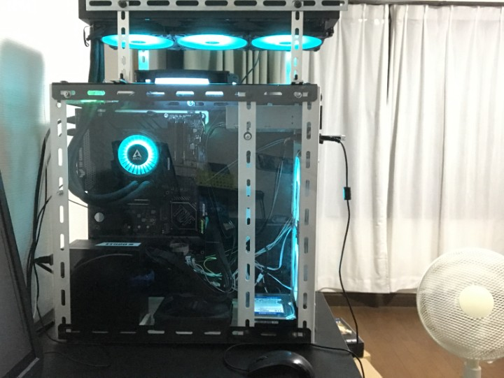
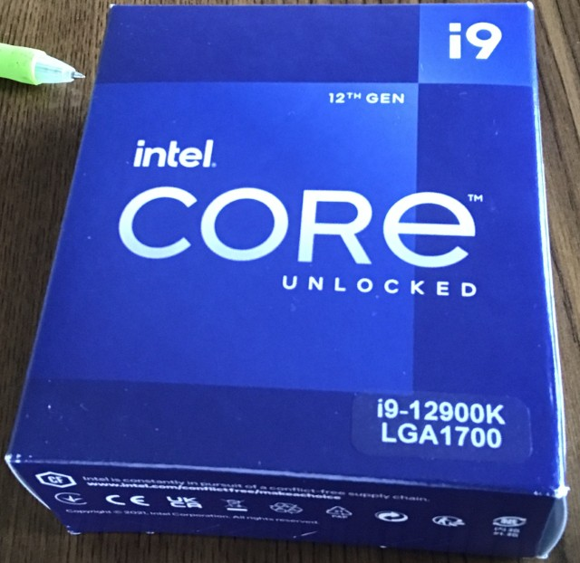
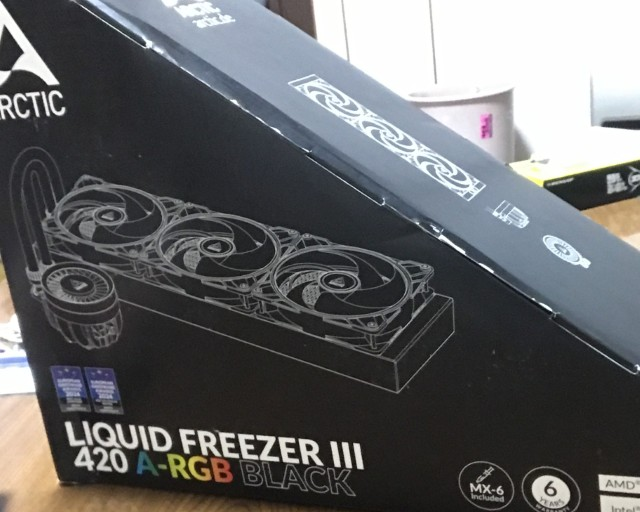
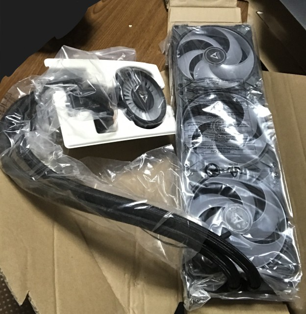
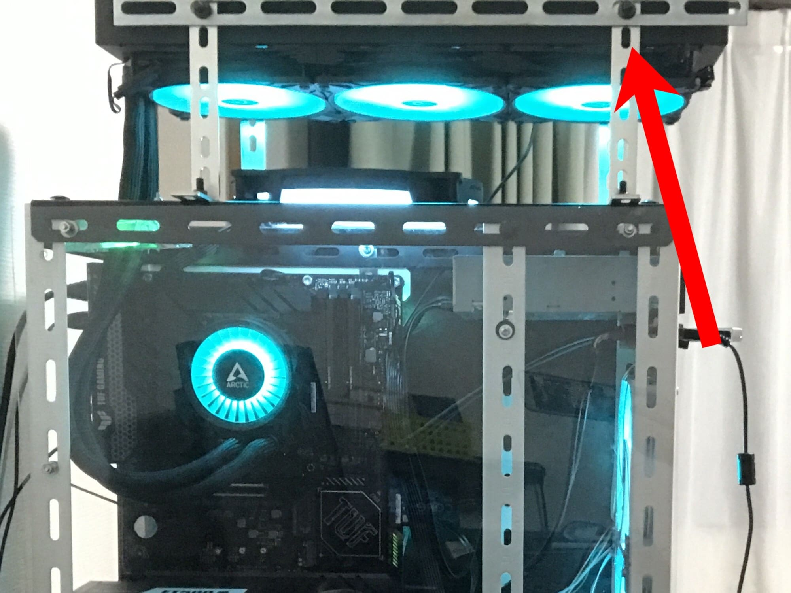
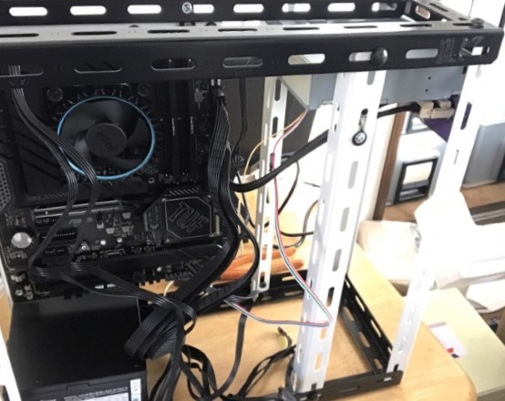
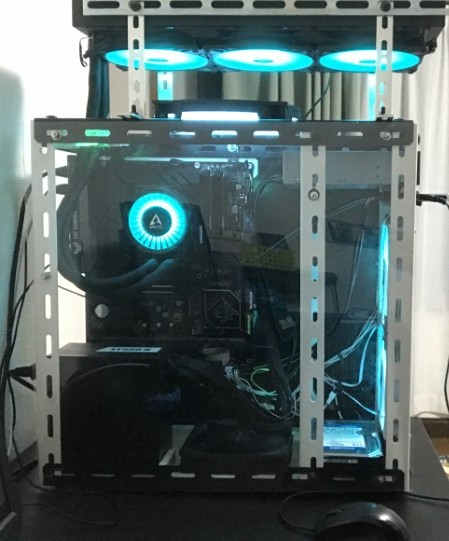
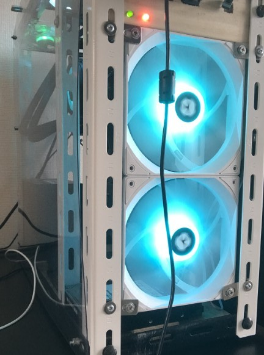
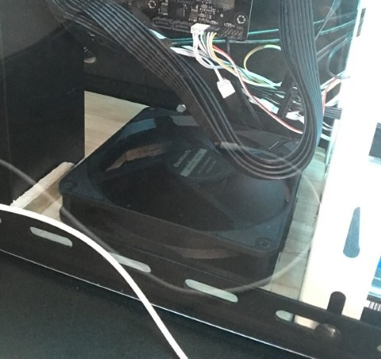
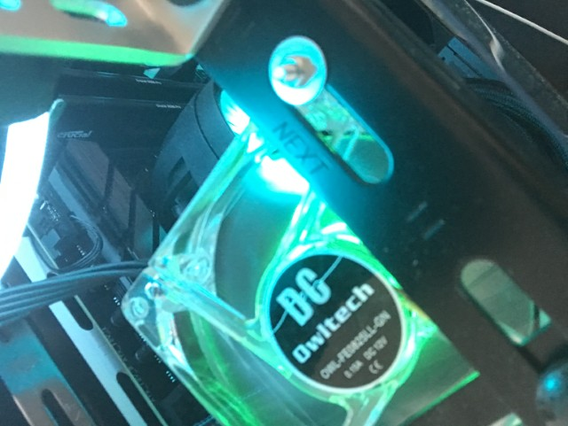

俺のメインPCを大幅アップグレードしてみた
最近あんまりサイトを更新してなかった湯豆腐サイト管理人です。
せっかくなので
PC自作録のほうに書いてなかったPCアップグレードについてまとめてみた。
あれから結構アップグレードしたな───(金も飛んだけど)
現在のメインPC
2025/08/11時点。
サイトに書いてなかったアップグレードがものすごい多いのでPC自作録に書いた内容から大きく変わってたり。
|

|
CPU: Core i9 12900K
GPU:intel UHD Graphics 770
RAM:Crucial DDR4 16GBx2
SSD:WD Blue SN580 500GB
HDD:WD Blue WD20EARZ 2TB
MB:TUF GAMING Z790 PLUS WIFI D4
PSU:SilverStone ET500-B
AIO:Liquid Freezer Ⅲ 420
CHA_FAN:いろいろ
|
アップグレード内容
CPU

PC自作録2ではi3 12100を使用してたがその後アップデート。
Amazonのセールで安くなっていたintel 12世代最強(KS除く)のCore i9 12900Kを取り付けた。
なお例のごとく爆熱なのでCPUクーラーも取り替えることにした。
Core i9 12900K 55000円(Amazonにて)
AIO
前まではi3だったのでリテールクーラーで冷やせてたけどi9に載せ替えるのでクーラーも交換。
どうせならすごい冷えそうなやつを買いたかったので簡易水冷のデカいやつを探したところ、簡易水冷は360mmより大きい420mmのものもあると判明。
色々なメーカーから出てるけど個人的に見た目のシンプルさ(といっても派手に光らせるけど)とレビュー云々考慮して、
Arcticから出ているLiquid Freezer Ⅲ 420 A-RGB BLACKという420mm簡易水冷を選んだ。黒基調でファンが光るやつ。


これがとにかく大きい。ラジエータも分厚くてよく冷えそう。
ちなみにintelユーザー(LGA1700/LGA1851)の場合はマザーボード側の取付金具を外すことになるので注意。
いずれグラボを買ったときにこいつのチューブがグラボに干渉しそうなのでラジエーターを10cmほど浮かせておく。
金具やらアングルやらでしっかり固定した。矢印部分がラジエータである。

Liquid Freezer Ⅲ 420 A-RGB BLACK 38000円(Amazonにて、他だともうちょい安いかも)
ケース
PC自作録最終回ではケースはあくまでパーツを固定しておくためのものだったので周りには何も貼っていなかった。
さすがにそれだけだと貧弱なのでケース側面(画像に映っている方)に透明な塩ビ板を取り付けることにした。


左が
PC自作録最終回時点、右が現在のPC。ものすごい変化である。
基本的なパーツの配置は変わっていない。電源の向きが変わったりファンが大幅に増えたりはしてるけど。
ファン
AIOのファンを除くと現在5枚のファンを搭載している。

フロントには2枚の140mmA-RGBファンを搭載している。これは両方新品で買ったThermalrightのTL-C14CW-Sというもの。吸気向きに設置してある。
なかなか静かで風量も値段の割には良い感じ。発色もそれなりに良いと思う。
そして価格はAmazonにて999円。とにかく安い。

ケース下部には
PC自作録最終回のときに購入した140mmの光らないファンをとりあえず設置している。これも吸気向き。
これはそのうちA-RGBの光るファンに交換したいと思う。
ケース上部、ラジエータファンの下には排気向きで200mmA-RGBファンを搭載している。
これはハードオフで660円で拾ってきた中古のP200RGBというファン。novonest社製。
これが意外と静かで風量もあってよかった。光り方も良い感じだし。

ケース上部にはもう一つファンを搭載している。ハードオフで330円で拾ってきた緑色に光るファン。排気向き。
OwltechのOWL-FE825LL-GNという80mmファン。正直200mmファンの横なので意味があるかどうかはわからないが光ってくれるので設置した。
今後のアップグレードについて
次回のアップグレードでグラボを取り付けることになると思う。
当初はRTX4060あたりを想定していたがそれはやめることにした。せっかく12900Kを使っているのでグラボもそれなりに強いやつを使いたい。
実はこの文章を書いてる時点ですでにそのグラボは購入して届いている。
ただし、今使っている500Wの電源ではPCie補助電源と電源容量自体が足りないので電源ユニットも1000W級にアップグレードすることになるだろう。